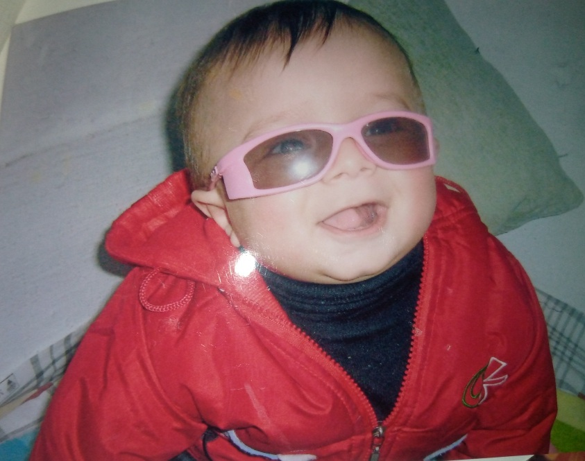

A collaborative research project exploring how Artificial Intelligence is affecting critical thinking among students across Pakistan, Nepal and Afghanistan.
Explore ResearchTo examine how AI tools influence students' ability to think critically, solve problems, and make independent judgments.
Pakistan
Nepal
Afghanistan
Literature Review, Surveys, Data Collection, Comparative Analysis, and Research Publication.
Literature Review (10%)
Survey Design (3%)
Data Collection (0%)
Pakistan
Leading the international research initiative investigating how Artificial Intelligence affects students' critical thinking across different countries.

Research Associate
Nepal
Research Associate
Afghanistan
Follow the progress of our international survey examining how Artificial Intelligence is affecting students' critical thinking.
Status: Launching soon
Launch Date: July 2026
Target Responses: 500+
Take the SurveyTotal Responses Collected
Participating countries
345 of 500 responses collected (69%)
Research paper will be published here.
View Paper✅ Research topic finalized and international team formed.
🕒 Under Process
🕒 Under Process
Project Lead: Ali Azmat Khan
International Collaborative Research Initiative
Hello, hope you are doing well. I'm the Project Lead of this research project investigating how Artificial Intelligence affects students' critical thinking across different countries. Thank you for visiting our website.